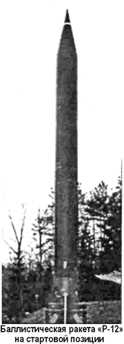

Ядерные взрывы в космосе
Перспектива использования околоземного космического пространства в качестве плацдарма для размещения ударных вооружений заставила задуматься над способами борьбы со спутниками еще до появления самих спутников.
Наиболее радикальным по тем временам средством представлялось уничтожение космических аппаратов взрывом ядерного заряда, доставляемого ракетой за пределы атмосферы.
С целью проверки эффективности такого вида противоспутниковой системы в Советском Союзе была проведена серия испытаний, получившая в документах условное наименование «Операция К». Кроме того, эта серия была призвана исследовать влияние высотных ядерных взрывов на работу наземных радиоэлектронных средств.
Операцией «К» руководила назначенная правительством Государственная комиссия во главе с генералом-полковником Александром Васильевичем Герасимовым.
Первые два эксперимента были проведены 27 октября 1961 года («К1» и «К2»), три других — 22 октября, 28 октября и 1 ноября 1962 года («КЗ», «К4» и «К5»).
В каждом эксперименте производился последовательный пуск с ракетного полигона в Капустином Яре двух баллистических ракет «Р-12», причем их головные части летели по одной и той же траектории одна за другой с некоторым запаздыванием друг от друга. Первая ракета была оснащена ядерным зарядом, который подрывался на заданной для данной операции высоте, а в головной части второй размещались многочисленные датчики, призванные измерить параметры поражающего действия ядерного взрыва.
Высота подрыва ядерных зарядов составляла: в операциях «К1» и «К2» — 300 и 150 километров при мощности головной части в 1,2 килотонны. Высота подрыва ядерных зарядов в операциях «КЗ», «К4», «К5» — 300, 150, 80 километров соответственно при существенно больших мощностях зарядов, чем в первых двух операциях (300 килотонн).
Информация об этих испытаниях до сих пор остается отрывочной.
Официальные документы о них не опубликованы и, скорее всего, еще долго останутся секретными. В отечественных публикациях удалось обнаружить только два упоминания об «Операции К».
Главный конструктор системы противоракетной обороны (системы «А») Григорий Кисунько в своей книге «Секретная зона» рассказал об «Операции К», но его больше всего интересовала работа системы ПРО. Вот выдержка из книги, где рассказывается о воздействии взрывов на работу аппаратуры:
«Во всех указанных экспериментах высотные ядерные взрывы не вызывали каких-либо нарушений в функционировании «стрельбовой радиоэлектроники» системы «А»: радиолокаторов точного наведения, радиолиний визирования противоракет, радиолинии передачи команд на борт противоракеты, бортовой аппаратуры стабилизации и управления полетом противоракеты.
После захвата цели по целеуказаниям от РАС обнаружения «Дунай-2» вся стрельбовая часть системы «А» четко срабатывала в штатном режиме вплоть до перехвата цели противоракетой «В-1000» — как и в отсутствие ядерного взрыва.
Совсем другая картина наблюдалась на РАС обнаружения метрового радиодиапазона «Дунай-2» и особенно ЦСО-П: после ядерного взрыва они ослеплялись помехами от ионизированных образований, возникавших в результате взрыва».

А вот что пишет Борис Черток о последнем испытании в серии, произведенном в день, когда на космодроме Байконур шла подготовка к запуску автоматической межпланетной станции к Марсу:
«1 ноября (1962 года. — А. П.) был ясный холодный день, дул сильный северный ветер.
На старте шла подготовка к вечернему пуску. Я забежал после обеда в домик, включил приёмник, убедился в его исправности по всем диапазонам. В 14 часов 10 минут вышел на воздух из домика и стал ждать условного времени.
В 14 часов 15 минут при ярком солнце на северо-востоке вспыхнуло второе солнце. Это был ядерный взрыв в стратосфере — испытание ядерного оружия под шифром «К-5». Вспышка длилась доли секунды. Взрыв ядерного заряда ракеты «Р-12» на высоте 60 километров (фактическая высота подрыва заряда была 80 километров. — А. П.) проводился для проверки возможности прекращения всех видов радиосвязи. По карте до места взрыва было километров 500. Вернувшись быстро к приемнику, я убедился в эффективности ядерного эксперимента. На всех диапазонах стояла полнейшая тишина. Связь восстановилась только через час с небольшим…»
Заканчивая тему советских ядерных взрывов в космосе, нельзя не сказать о проекте «Е-3», который предполагал доставку на Луну и подрыв на ее поверхности атомного заряда.
Его автором был известный советский физик-ядерщик академик Яков Борисович Зельдович. Основной целью проекта было доказать всему миру, что советская станция достигла поверхности Луны. Зельдович рассуждал следующим образом.
Сама по себе станция очень мала и ее падение на лунную поверхность не сможет зафиксировать ни один земной астроном.
Даже если начинить станцию взрывчаткой, то и такой взрыв никто на Земле не заметит. А вот если взорвать на лунной поверхности атомную бомбу, то это увидит весь мир и ни у кого больше не возникнет вопросов или сомнений.
Несмотря на обилие противников проекта «Е-3», он был детально проработан, и в ОКБ-1 даже изготовили макет станции с ядерной боеголовкой. Контейнер с зарядом, как морская мина, был весь утыкан штырями взрывателей, чтобы гарантировать взрыв при любой ориентации станции в момент соприкосновения с поверхностью Луны.
Однако макетом пришлось и ограничиться. Уже на стадии эскизного проектирования ставились вполне резонные вопросы о безопасности такого пуска. Никто не брался гарантировать стопроцентную надежность доставки заряда на Луну. Если бы ракета-носитель потерпела аварию на участках работы первой или второй ступеней, то контейнер с ядерной бомбой свалился бы на территорию СССР. Если бы не сработала третья ступень, то падение могло бы произойти на территории других стран.
В конце концов было решено отказаться от проекта «Е-3». Причем первым, кто предложил это сделать, был его инициатор — академик Зельдович.
Впоследствии индекс «Е-3» был присвоен проекту, предусматривавшему фотографирование обратной стороны Луны с большим разрешением, чем это сделала станция «Луна-3».
Были осуществлены два пуска, 15 и 19 апреля 1960 года. Оба они закончились авариями, и больше пусков в рамках проекта не производилось.